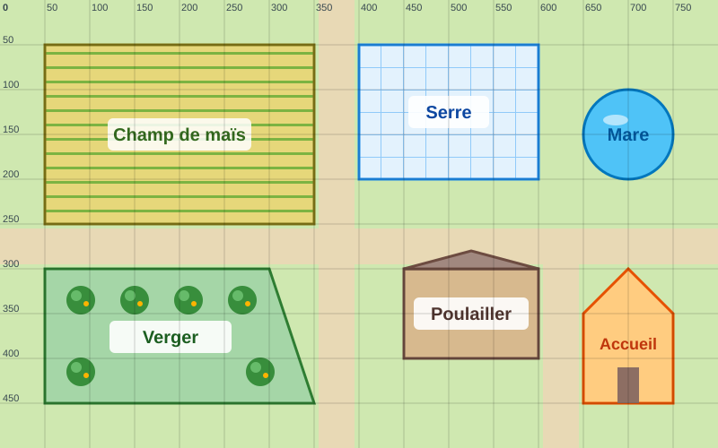

Le plan de la ferme

Le champ de maïs
Le maïs est semé au début de la saison des pluies. Les élèves apprennent à reconnaître les étapes de sa croissance, du semis jusqu'à la récolte des épis.
La serre
La serre protège les jeunes plants du vent, des fortes pluies et de certains insectes. On y prépare les semis de tomates et de piments avant de les repiquer au potager.
La mare
La mare accueille des grenouilles, des libellules et de nombreux insectes. Elle sert aussi de réserve d'eau pour arroser le potager en saison sèche.
Le verger
Le verger compte des manguiers, des avocatiers et des agrumes. Les arbres fruitiers mettent plusieurs années avant de donner leurs premiers fruits.
Le poulailler
Une vingtaine de poules y vivent. Elles pondent des œufs, mangent les restes de cuisine et leur fumier enrichit le compost.
L'accueil
L'accueil est ouvert du mardi au samedi, de 8 h à 17 h. C'est ici que commencent toutes les visites guidées.